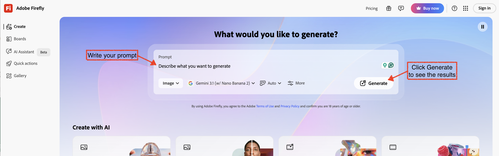
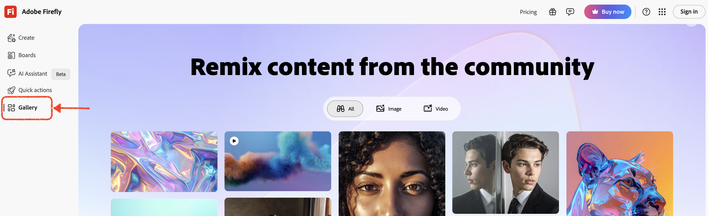
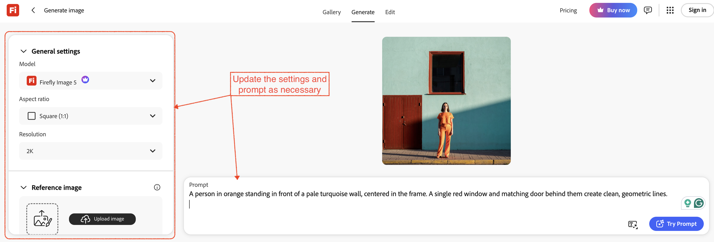

AI Essentials
Module 1 | Non-Graded Exploration Activity
Why this matters: Generative AI is one specific type of AI workload. It creates new content (images, text, audio, video) from a prompt. It is very different from a rule-based system that follows fixed instructions, or a predictive model that forecasts outcomes. Recognizing that difference will help you on the Module 1 quiz and in your later prompt-engineering assignments.
What to do: Work through the guided steps below. You do not need to create an account or generate anything yourself. You are observing and analyzing. Use the reflection questions at the end to cement your understanding.
Generative AI is an AI system trained on large amounts of existing content (text, images, code, audio) so that it can produce new content that resembles what it learned. It does not look up a stored answer or follow a decision tree. Instead, it generates a response that fits the pattern of the prompt it received.
| System Type | How It Works | Example |
|---|---|---|
| Rule-Based | Follows a fixed set of "if-then" rules written by a programmer | An ATM that dispenses cash only when your PIN matches |
| Predictive / ML | Learns from historical data to forecast an outcome or classify input | A spam filter that scores incoming email as "spam" or "not spam" |
| Generative AI | Creates new, original content (text, images, etc.) from a prompt | Adobe® Firefly™ generating a product photo from a text description |
Open a browser and navigate to firefly.adobe.com. You will land on the homepage.

Notice: The interface centers on a text box where you type a prompt. The AI does all the generating. You provide words, and it creates a visual.
Adobe® Firefly™'s gallery shows example prompts paired with the images they produced. Find one example and read both the prompt and the image result.

On the demo page, look for options that let users adjust the style, mood, or artistic format of the output, such as "Photo," "Graphic," "Art," or "Black and white."

Adobe has published short explainer videos on its website and YouTube channel. Search for "Adobe Firefly overview" on YouTube if you would like to see the tool in motion.
Take a moment to think through each question on your own, then click the button to reveal a sample answer and compare your thinking.
1. In your own words, what is the biggest difference between a generative AI tool like Firefly and a rule-based system like an ATM? Try to explain it as if you were telling a friend who has never heard of AI.
2. Name one profession or everyday task where you think a generative image tool could be genuinely useful. What problem would it solve?
3. Generative AI sometimes produces outputs that are incorrect, biased, or unexpected. Why do you think that happens, and what could a user do to reduce that risk?